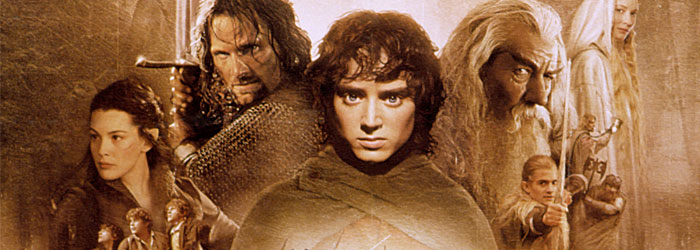
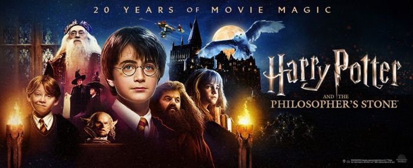

WŁADCA PIERŚCIENI

Może dla jednych oklepany film, ale jak dla mnie klasyka gatunku, bez której nie mogłaby obyć się ta lista. Jako dziecko najpierw widziałem filmy (dwie części nawet w kinie), a później jako nastolatek wróciłem do książki - uważam, że warto zaznajomić się z obiema pozycjami.
HARRY POTTER
Film (a bardziej uniwersum), które pokochała znaczna część świata (w tym ja) i dzięki któremu część ludzi sięgnęła po książki. Druga pozycja na liście, która jest ekranizacją ksiązki, ale nie oszukujmy - książki z reguły są pierwsze.
